Trust Me, Bro
Breaking Windows Authenticode Trust
Fagan Afandiyev · @KriyosArcane
DEF CON 34 · Red Team Village
Breaking Windows Authenticode Trust
Fagan Afandiyev · @KriyosArcane
DEF CON 34 · Red Team Village

a friend said something dumb. I had to find out if it was dumb.
"I make my own signature and print it on"
ok but... does Windows check?
and who exactly is doing the checking?
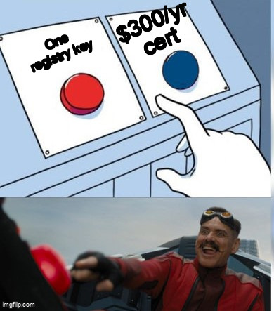
file → [magic box] → trusted / not
nope.
it's not one check. it's a whole pipeline.
Fagan Afandiyev / KriyosArcane
Got nerd-sniped by a Discord conversation. Spent a year in the rabbit hole.
Windows trust · Code signing · Offensive tooling
USF | White Knight Labs | Microsoft (incoming)
@KriyosArcane
Caller → WinVerifyTrust → SIP → Chain → Policy → FinalPolicy → Verdict
each stage = a registry-configured callback
writable with local admin
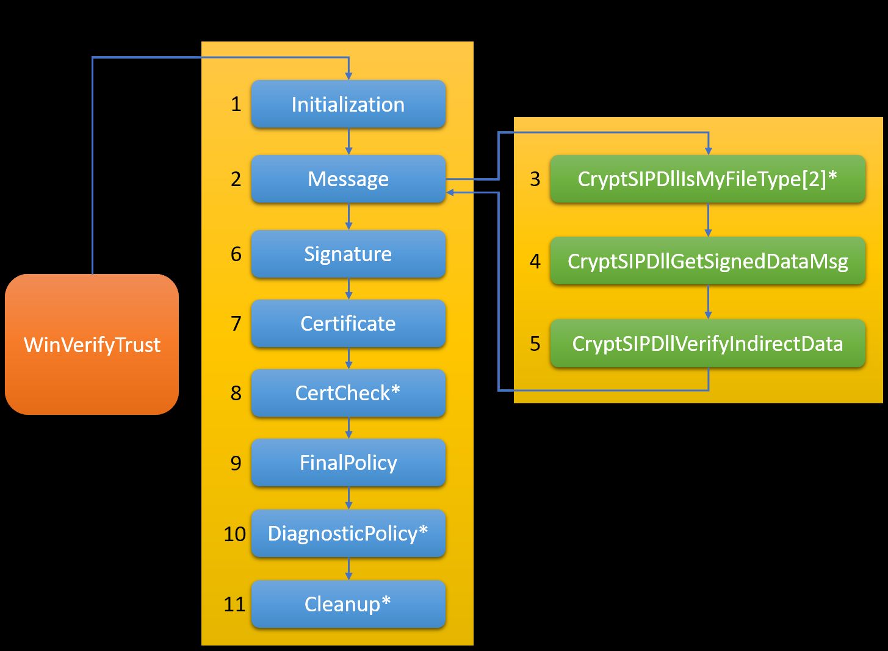
each numbered box = a different DLL callback. green = SIP functions. (source: SpecterOps)
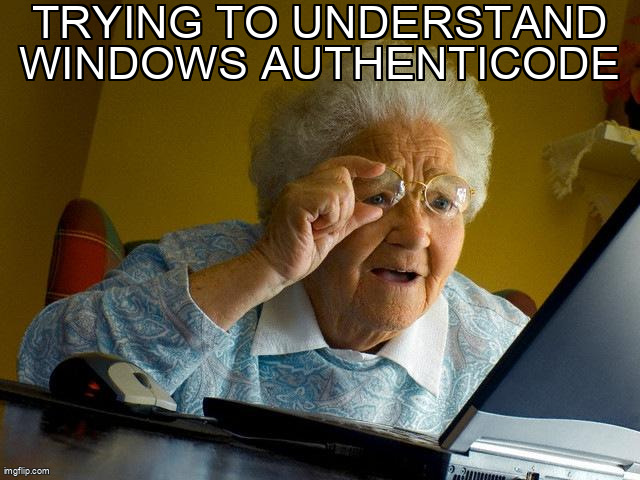
HKLM\SOFTWARE\Microsoft\Cryptography\OID\...
these keys say which DLL answers each trust question
writable with local admin
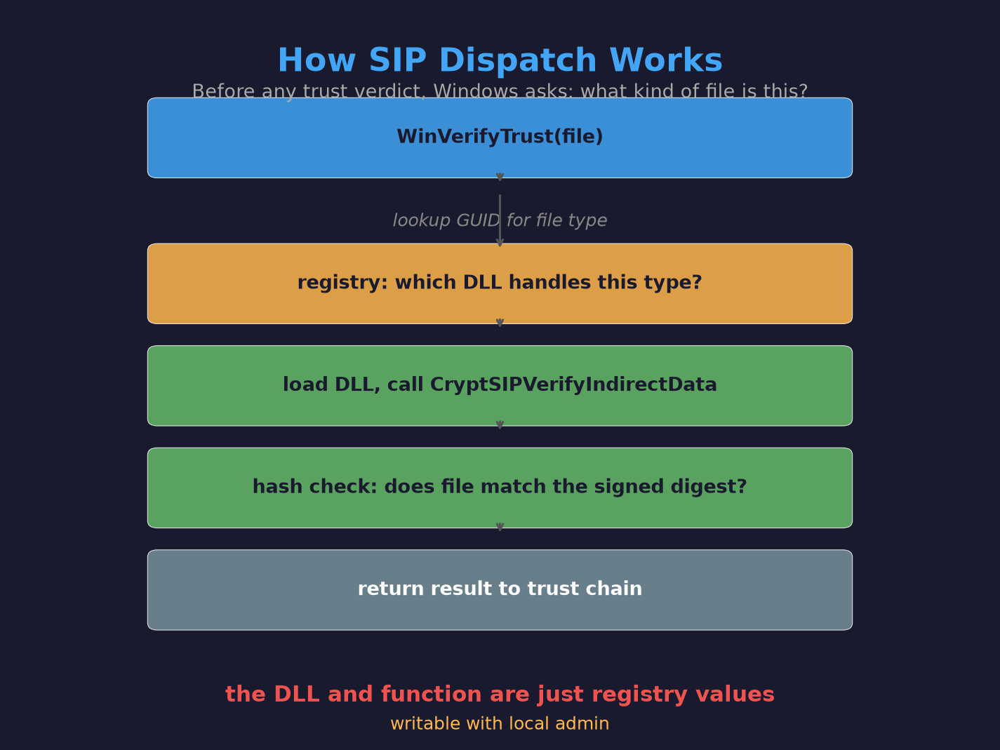
SIP = Subject Interface Package. one per file type. the DLL and function are registry values.
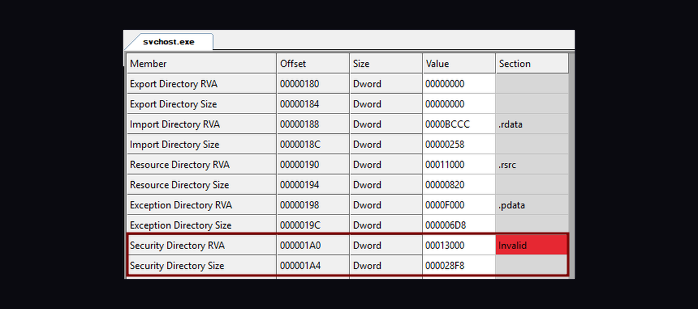
Security Directory entry. file offset, not RVA. never mapped into memory.
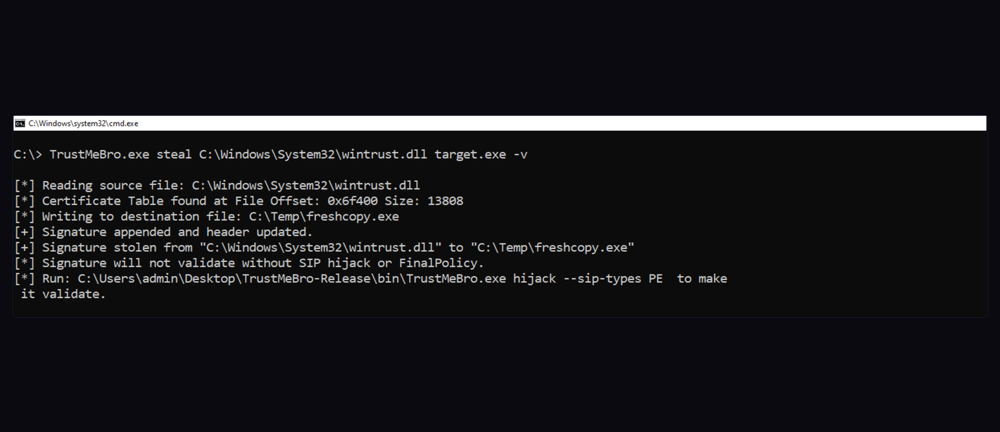
copy the WIN_CERTIFICATE from a signed binary onto your target. easy.
Explorer: "Signed by Microsoft" ✓
PowerShell: HashMismatch ✗
having a signature ≠ passing verification
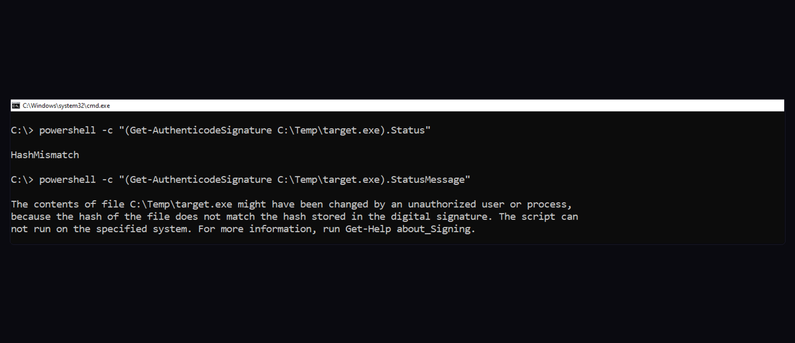
file bytes don't match the digest. only the hash check fails. everything else passes.
chain ✓ cert ✓ timestamp ✓
hash ✗
so... who checks the hash? can I swap them out?
the hash verifier is a registry pointer
point it at something that returns 0
without checking anything
a debugger function
takes 2 params. returns 0.
CryptSIPVerifyIndirectData also takes 2 params.
interprets 0 as "hash is valid"
we asked a debugger about cryptography. it said yes.
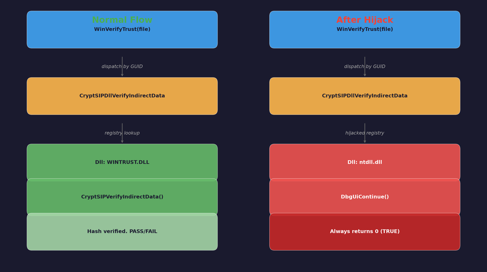
left: real verification. right: DbgUiContinue says yes to everything.
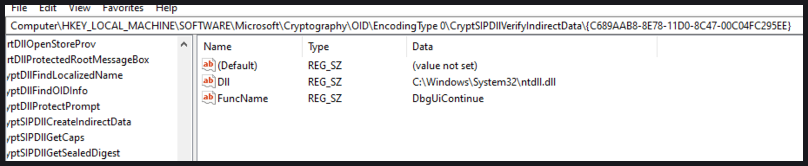
Dll = ntdll.dll, FuncName = DbgUiContinue. that's the whole change.
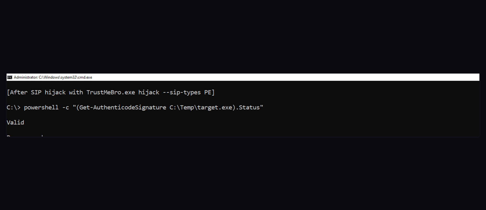
fresh powershell: Status = Valid. same stolen sig, same file. different answerer.
1. Steal signature from svchost.exe
2. Verify: HashMismatch
3. TrustMeBro.exe hijack --sip-types PE
4. New process: Valid
5. TrustMeBro.exe hijack --clean
6. New process: back to HashMismatch
swaps: user-mode hash verification callback
doesn't touch: file bytes, kernel CI, real certs, catalogs
needs: local admin + fresh process
Windows caches SIP DLLs per-process
old powershell: still fails
new powershell: passes
same machine, same file, different answer
SIP hijack is one file type at a time. what flips everything?
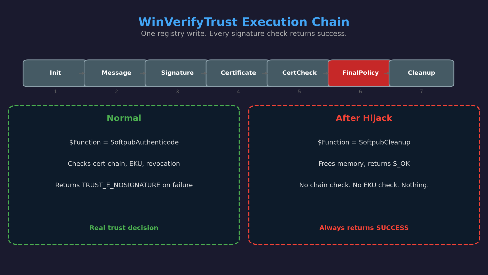
last stage before the caller gets a verdict. one function decides everything.
7 configurable stages
swapped each to a benign export
only FinalPolicy (stage 6) flips the verdict
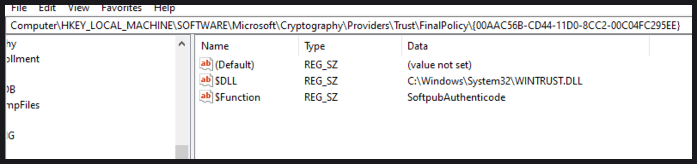
same DLL, different export. one registry value. verdict flips.
SIP hijack: one file type at a time
FinalPolicy: all user-mode Authenticode using this provider path
one value. trust collapses.
SIP hijack: file appears validly signed ✓
FinalPolicy: everything passes ✓
next question: hiding data inside signed files?
without breaking the signature?
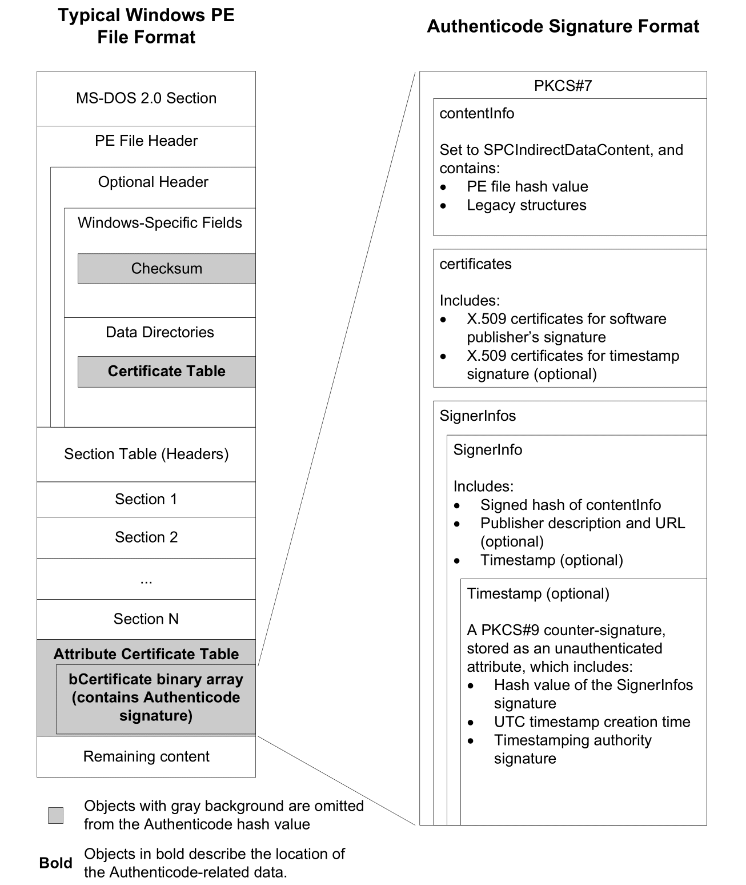
gray = skipped (checksum, cert table entry, cert table). hash covers the rested.
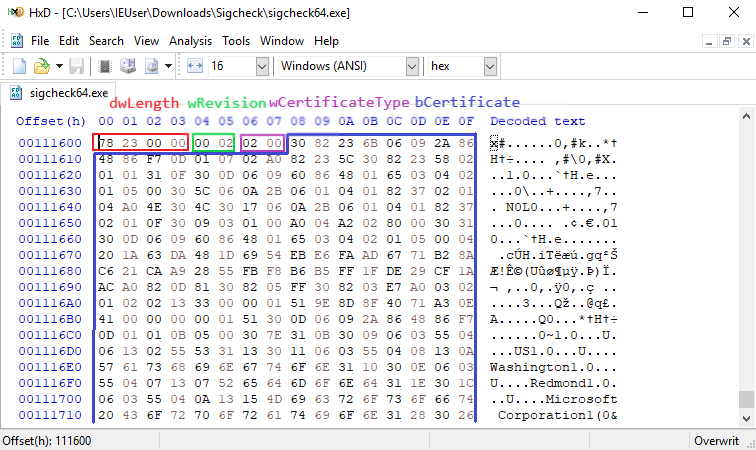
dwLength, wRevision, wCertificateType, then bCertificate[] = the PKCS#7 blob.
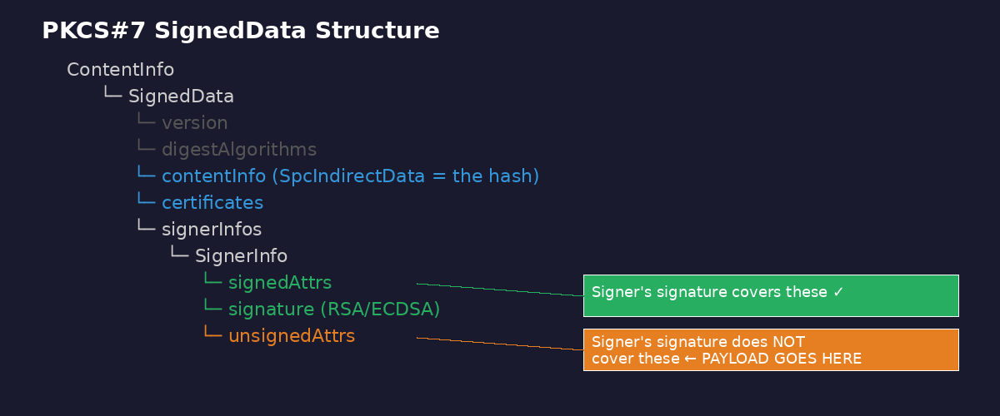
signedAttrs = covered. unsignedAttrs = NOT covered. remember this part.
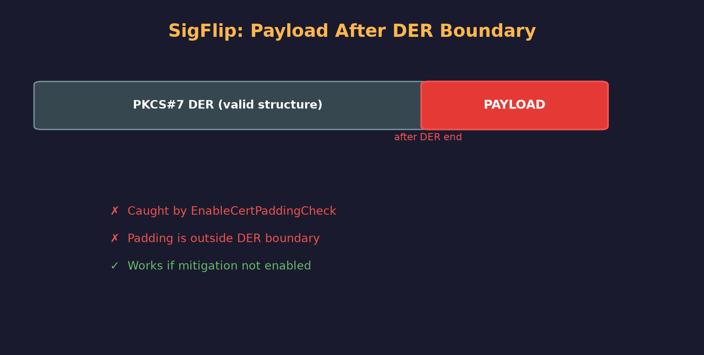
payload after the DER boundary. EnableCertPaddingCheck kills this.
Microsoft's mitigation for padding abuse
SigFlip: caught
SigStash: doesn't care. it's valid ASN.1.
the check looks for post-DER junk, not unsignedAttrs
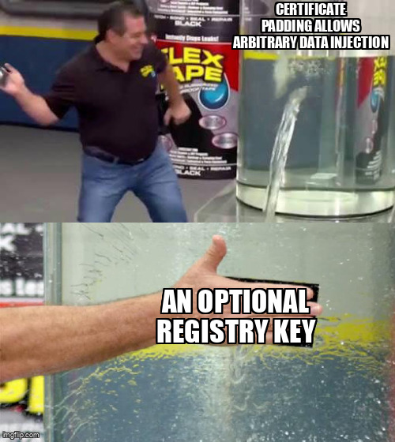
unsignedAttrs is not covered by the signature
shove data in there
inside DER, not after it
signature stays valid
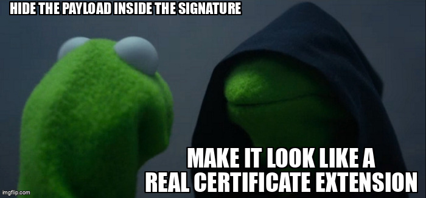
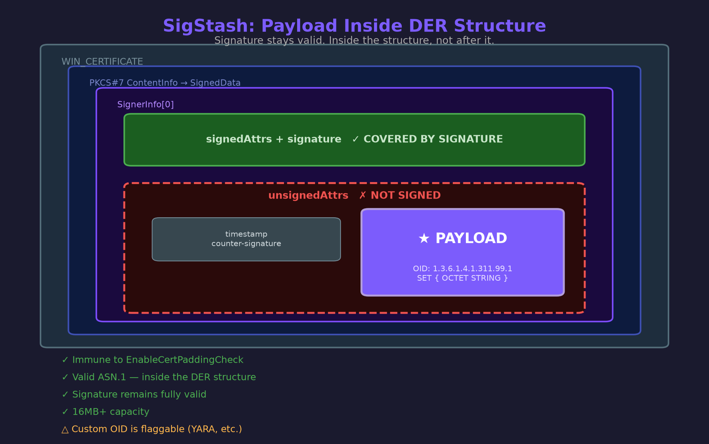
custom OID in SignerInfo.unsignedAttrs. valid ASN.1. not padding.
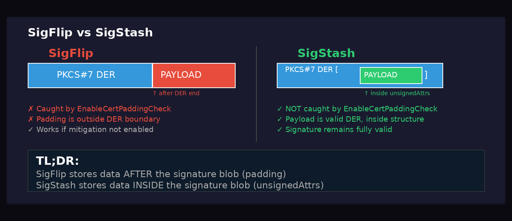
SigFlip = after DER (padding check catches it). SigStash = inside DER (unaffected).
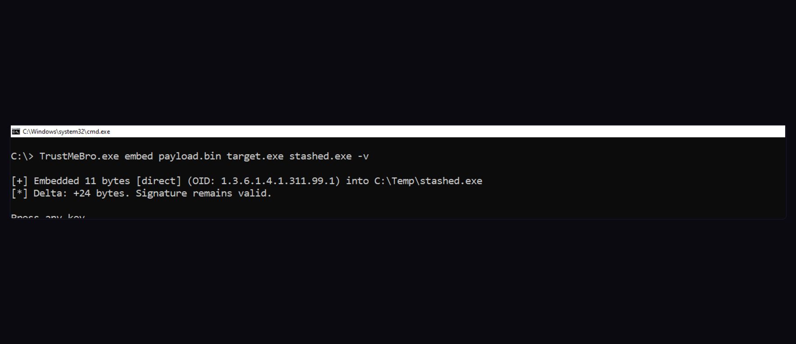
payload goes in. Get-AuthenticodeSignature still says Valid.
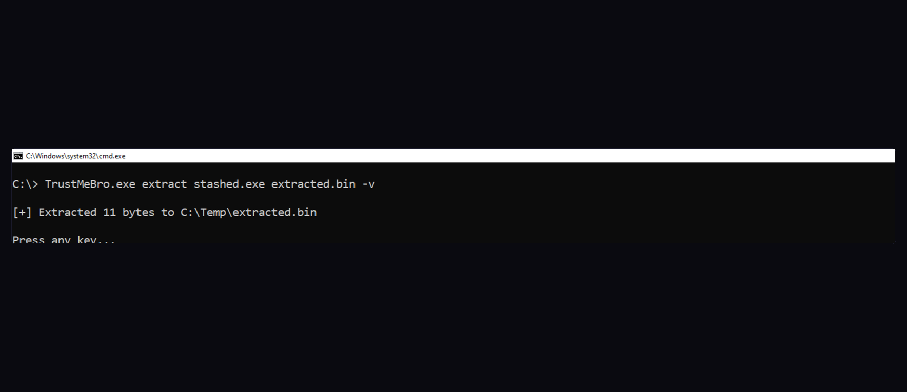
pull it back out. SHA256 matches. round-trip clean.
we fake trust and hide data. getting code execution from this?
we changed which DLL loads to bypass trust
what if the DLL IS the payload?
processes that call WinVerifyTrust on your GUID will LoadLibrary your DLL
code execution triggered by a trust question
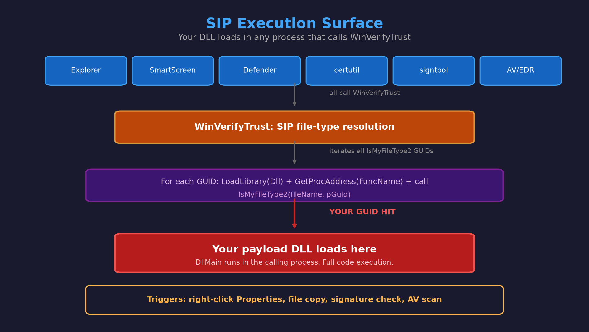
remote reg write → DCOM trigger → msiexec → SIP DLL loads → callback. no payload on disk.
1. Elastic agent running, policy: Detect + Prevent
2. Remote registry write from Linux
3. DCOM MMC20 trigger → msiexec
4. SIP DLL loads inside msiexec.exe
5. Named pipe callback → whoami
6. Zero Elastic alerts. Callback lands.
SIPExec needs a remote trigger (DCOM, msiexec)
FormatGhost? right-click → Properties
the Digital Signatures tab triggers trust evaluation
looking at a file runs your code
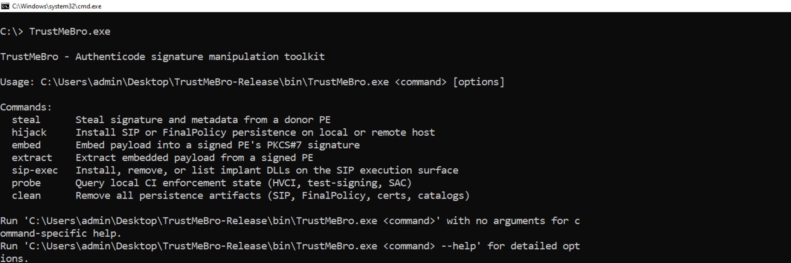
steal · hijack · embed · extract · sip-exec · probe · clean
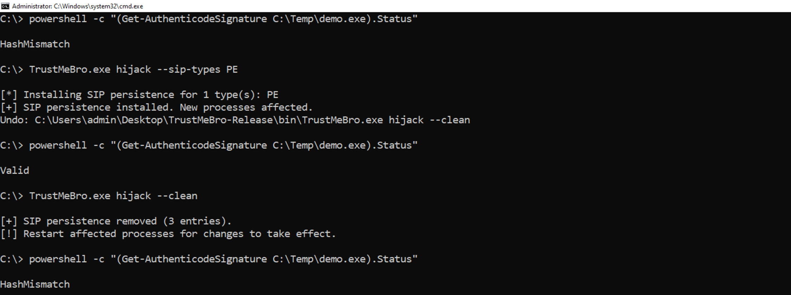
Inspect → apply one primitive → prove result → clean. Always clean up.
No forged private key
No kernel Code Integrity bypass
No universal WDAC / SAC / EDR bypass claim
No remote effect without the needed access + trigger
The real behavior is strange enough without inflating it.
these attacks don't modify the file. artifacts live in registry + process state.
prevent: monitor SIP + FinalPolicy registry keys. WDAC policies.
detect: registry change events. unusual DLL loads in Explorer, PowerShell, msiexec.
validate: cross-check with multiple tools. verify both x64 and WOW64 views.
1. Signature present ≠ trust verdict.
2. Trust is a call chain. Parts are configurable.
3. Check the file, the registry, and the process.
Trust is not a wall.
It's questions, asked by registered trust providers and SIPs,
routed through the registry.
You change who gets asked.
@KriyosArcane
github.com/KriyosArcane/TrustMeBro
@KriyosArcane